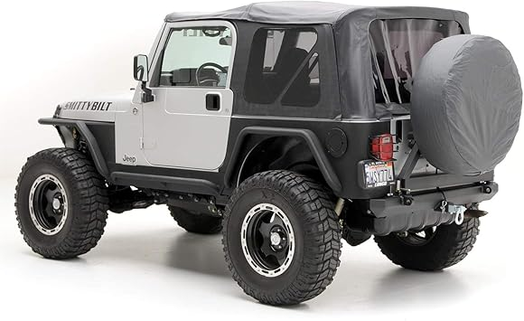
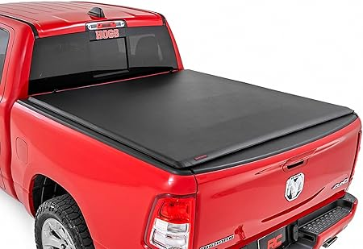

← jlcovers.com
Smart Jlcovers Shopping in 2026
May 2026
The honest truth about jlcovers: most products are decent. What separates good from great are details you won't find in a product listing.
What the Pros Look For
- Dimensions matter — Read the actual measurements. "Large" means different things to different jlcovers manufacturers.
- Material grade — Higher-grade materials in jlcovers last longer and perform better, even when designs look similar.
- Build quality — Cheap jlcovers fall apart fast. Look for solid construction and quality materials.
- Availability — In-stock with fast shipping beats a "better" product backordered for weeks.
What We Learned
- The Q&A section on jlcovers listings often answers questions that no review covers.
- The 3-star reviews are gold. They're usually the most balanced and honest takes on jlcovers.
- Amazon's return policy removes most of the risk when buying jlcovers you haven't seen in person.
- Between two options? Go with the one that has more reviews. Volume of feedback matters for jlcovers.
Rookie Mistakes
- Panic buying on sale days — Prime Day and Black Friday jlcovers deals aren't always real discounts. Check year-round pricing.
- Overbuying features — Most people use 20% of high-end jlcovers features. Don't pay for what you'll never touch.
- Waiting for the perfect deal — If you need jlcovers now, buy now. A 10% discount in 3 months costs you 3 months of use.
Tried and Tested

→ #1 — for Jeep Wrangler Seat Covers 4 Door JL 2018-2026 Custom Seat Covers Interi — Top rated

→ #5 — FREESOO Seat Covers for Jeep Wrangler 4 Door JL 2018-2026 Custom Interior — Best seller

→ #2 — for Jeep Wrangler Seat Covers JL 4 DR Without Rear Cup Holder 2018-2026 — Consistently rated

→ #4 — FREESOO Customized Seat Covers Full Set for Jeep Wrangler JL 4 Door 2018-20 — Top rated

→ #3 — Car Seat Cover Fit for Jeep Wrangler 2000-2025 Compatible Airbag Non-Slip W — Highly reviewed
The Bottom Line
We update our jlcovers reviews as new products launch. Bookmark jlcovers.com for the latest.
Affiliate Disclosure: As an Amazon Associate, we earn from qualifying purchases. This doesn't affect our recommendations.